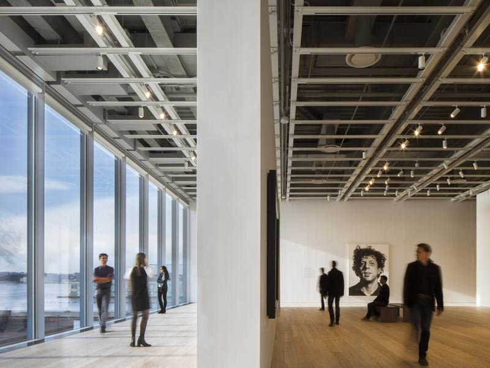

🌟 Iconic Art & Museum Highlights

🖼️ The Metropolitan Museum of Art
Explore over 2 million works of art, from ancient Egyptian artifacts to European masterpieces. The Met's rooftop garden offers stunning views of Central Park and the city skyline.

🌀 The Guggenheim Museum
Designed by Frank Lloyd Wright, this iconic spiral building houses a remarkable collection of modern and contemporary art, including works by Kandinsky and Pollock.

🖌️ The Whitney Museum of American Art
Dedicated to 20th- and 21st-century American art, the Whitney showcases works by artists like Edward Hopper, Georgia O'Keeffe, and Jean-Michel Basquiat.